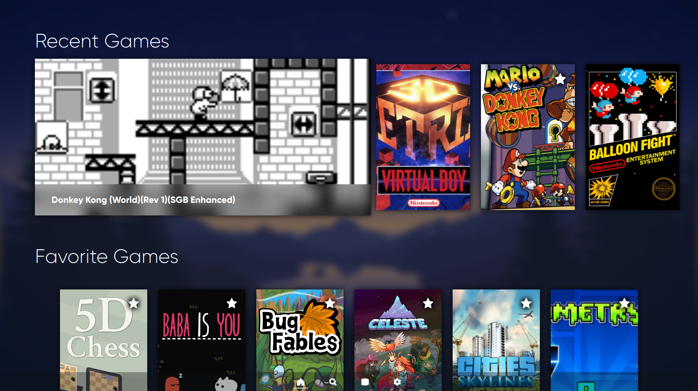
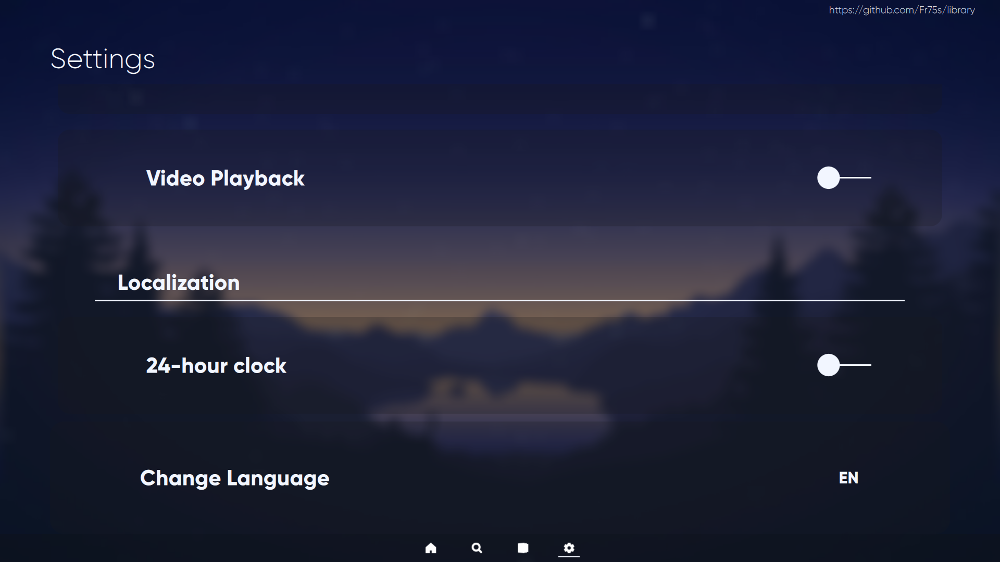

Overview
Library is a theme for the Pegasus Frontend. It provides a clean interface inspired by the Steam Deck's UI, that shows games' art. It is an easy to use theme which provides a great experience through its design and features.
Features
Library has several features that make it stand out from other themes.
Customizable
Library has several toggleable options which allow you to easily modify parts of the theme. Options include a light mode, expanding the game width and more.
Advanced Features
Library has several advanced features which other themes don't have, such as mouse-based navigation and a virtual keyboard for searching. These features make Library distinct from other themes.
Little Hassle
Library is a theme that is quite simple to use, making it easy to search through your game library. It also uses little metadata: only the title, box art and another art/screenshot is needed for games to fully function in this theme.
Installation
Installing this theme is simple. You will first want to download the zip file. Click the button below to do so.
Next, you would want to install the theme zip. Please refer here to find out where to extract the theme.
Finally, after extracting the theme, you may remove the SAFELY_REMOVABLE folder that's in the assets folder for this theme.
Gallery
Home Page
Favorites

Collections

All Games

Searching
Inside a Collection

Settings

Modification 1

Modification 2

More
Want to see more? Check out the github page for this theme. You may also want to check out some modifications for the QML files for this theme as well.
Library was made as a personal project for my needs, created so that I could have a decent interface for the Pegasus frontend. For the more advanced techniques used in this theme, I referred to other Pegasus themes and QML documentation (requiring lots of searching). A list of these themes are below.
Special Thanks To
- https://github.com/valsou/neoretro: The framework I built this theme off of, used for the separate page file system and Colcon.qml.
- https://github.com/TigraTT-Driver/shinretro: A theme which provided the functionality for portrait-style steam game box art and more. I didn't find out about this theme until Library was mostly complete.
- https://github.com/PlayingKarrde/clearOS: A theme providing part of the search functionality of the theme.